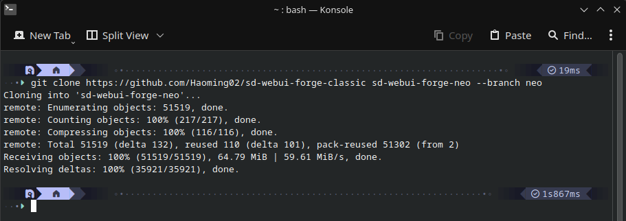
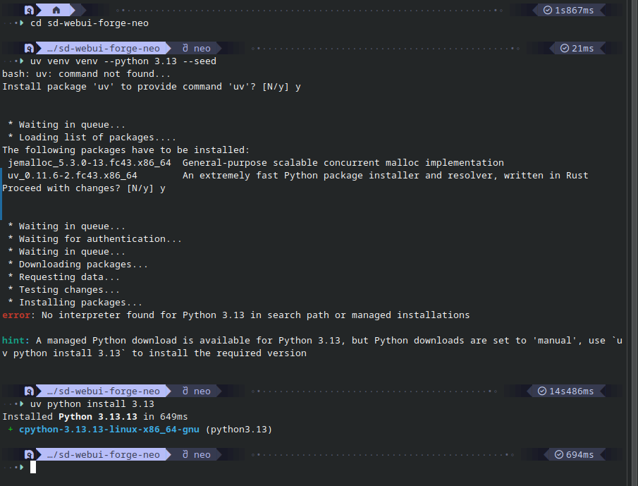
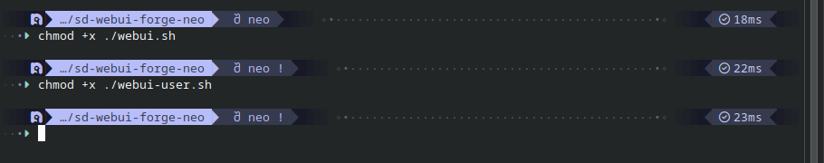
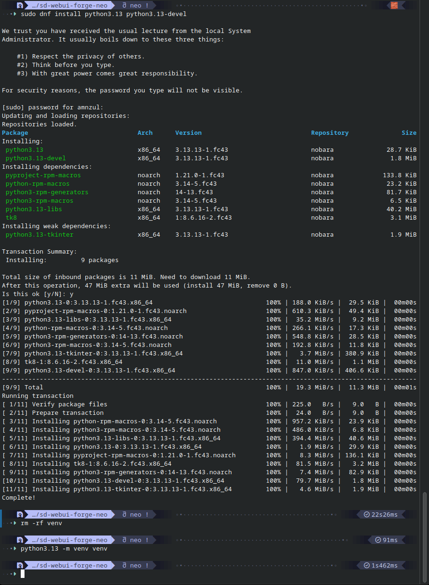
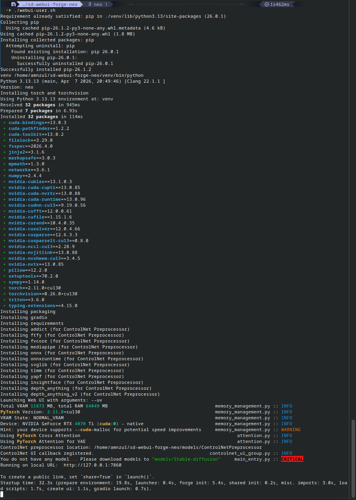
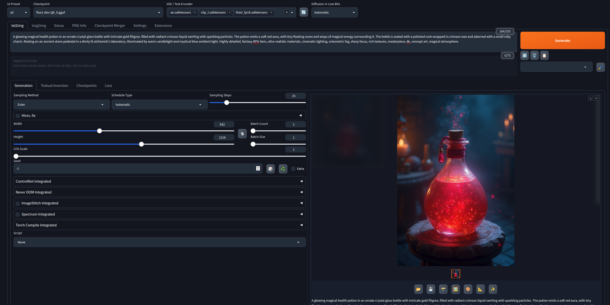

Running Stable Diffusion Locally with WebUI Forge
Building a Local AI Image Generation Workstation — 2026
Why I Wanted to Run Stable Diffusion Locally
After experimenting with cloud-based AI image generators I wanted to learn how modern image generation models worked on my own hardware. Running Stable Diffusion locally would give me complete control over the models I used, eliminate subscription costs, and allow unlimited experimentation without relying on online services.
Just as I had previously explored local large language models using LM Studio, installing Stable Diffusion represented another step toward building a fully local AI development environment.
Hardware
To provide a smooth image generation experience, I installed Stable Diffusion on a desktop equipped with an NVIDIA GPU.
- Intel Core i7-13700 (13th Generation)
- NVIDIA GeForce RTX 4070 Ti with 12 GB GDDR6X Video Memory
- 64 GB DDR5 RAM
- Nobara Linux 43
This configuration provided enough GPU memory to comfortably experiment with modern image generation models while maintaining responsive performance.
Installing WebUI Forge
Although Stable Diffusion can be run entirely from the command line, I quickly learned that a graphical interface makes the overall experience significantly more enjoyable. In 2026, one of the most popular interfaces for local image generation is WebUI Forge.
I installed WebUI Forge using the Linux installation instructions provided by the project and configured it as the front end for my Stable Diffusion environment.
The first step was to clone the git.

This was on a newly installed Nobara OS, so python needed to be installed as well as uv.

Executable permissions were assigned to the shell scripts.

I got some error messages, so reinstalled python.

With everything installed, it was time to start it up!

It was here I learned I needed to download the models separately!
Installing My First Model
To get started, I followed a community guide explaining how to install the FLUX image generation model within WebUI Forge.
Since the model files are hosted on Hugging Face, I first created an account and logged in before downloading the required components.
The installation required several files placed into the appropriate model directories. the files were available at:
- https://huggingface.co/city96/FLUX.1-dev-gguf/tree/main.
- https://huggingface.co/lllyasviel/flux_text_encoders/resolve/main/t5xxl_fp16.safetensors.
- https://huggingface.co/lllyasviel/flux_text_encoders/resolve/main/clip_l.safetensors.
- https://huggingface.co/black-forest-labs/FLUX.1-dev/resolve/main/ae.safetensors.
models/
├── Stable-Diffusion/
│ flux1-dev-Q8_0.gguf
│
├── Text-Encoders/
│ t5xxl_fp16.safetensors
│ clip_l.safetensors
│
└── VAE/
ae.safetensors
Once the model, text encoders, and VAE were installed, WebUI Forge recognized them automatically.
Launching the Interface
After starting the application, the web interface became available locally at:
http://127.0.0.1:7860/From there I could select models, enter prompts, adjust image generation parameters, and begin experimenting with locally generated artwork.

What I Learned
Installing Stable Diffusion taught me considerably more than simply generating images. I gained a better understanding of how modern image generation systems are assembled from multiple components, including the diffusion model itself, text encoders, and the variational autoencoder (VAE). Seeing these pieces work together gave me a much deeper appreciation of the underlying technology than I had gained from using hosted services alone.
I also discovered the importance of the open-source AI community. Community documentation, tutorials, and shared workflows made it possible to configure a powerful local image generation environment using freely available tools.
Reflection
Building my own Stable Diffusion workstation was another milestone in my AI journey. It combined Linux administration, GPU computing, open-source software, and generative AI into a single project. Rather than simply consuming AI services, I was able to build and operate the complete image generation pipeline myself.
As open-source models continue to improve, I expect locally hosted image generation to become increasingly capable and accessible. Projects like WebUI Forge make it possible for enthusiasts and developers alike to explore state-of-the-art image generation while maintaining full control over their hardware, workflows, and creative output.